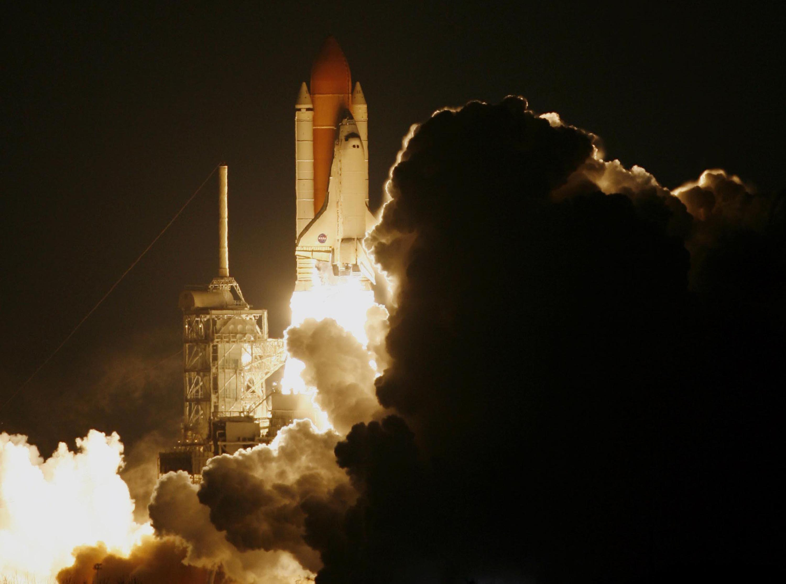

|  |
| -SpaceCrafts- |
|---|
Firmamız 2006 yılında Ankara'nın Gölbaşı ilçesinde geniş açık alan arazisinin yanında 5000 metrekare kapalı alanda hizmet vermekte olan bir kuruluştur. Kurucumuz Ali Mert Kocaman, bu sektörde uzun yıllar çalışmış olmanın verdiği tecrübe ve yüksek bilgi birikimi ile; alanında uzman, kaliteli bir ekip kurmayı başarmış, büyük adımlar atma yolunda başarı ile ilerlemektedir. SpaceCrafts; günümüzde TAİ, Aselsan, Roketsan, Nasa ve SpaceX gibi hem yabancı hem de yerli firmalarla iş birliği içinde olup büyük işlere imza atmıştır. 2012'de uzaya gönderilen ilk SpaceCrafts uzay aracı görevini başarı ile yerine getirmiş, sorunsuz bir şekilde gezegenimize iniş yapmıştır. Siz değerli müşterilerimize en iyi şekilde hizmet vermek arzusundayız. Sizleri de bizimle beraber gelişerek büyümeye davet ediyoruz. Ali Mert KOCAMAN / SpaceCrafts |